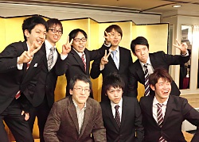
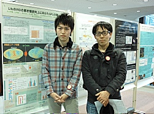
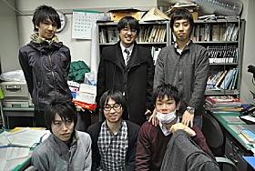
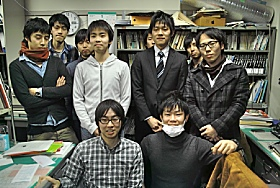
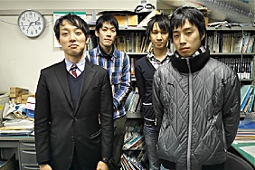
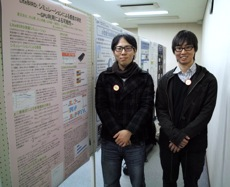
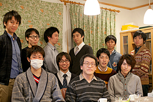

中村研ニュース（2012年度）
D3の村山育子とM1の夏目が日本物理学会年次大会で登壇［2013年3月］
3月26日（火）から29日（金）まで，日本物理学会第68回年次大会が広島大学東広島キャンパスで開催され，28日に中村研の博士課程（後期）３年の村山育子が，29日に博士課程（前期）１年の夏目が登壇しました。 講演のタイトルは，村山育子が「シンチレーション光の測定回路における時間特性の評価」で，キセノンシンチレータの発光時間特性の正確な評価方法について発表し，夏目が「LiteBIRD：シミュレーションによる宇宙背景輻射の解析感度研究」で，高エネルギー加速器研究機構他と共同で進めている宇宙背景マイクロ波放射のＢモード偏光観測計画LiteBIRDのための感度シミュレーションについて発表しました。修士生３名と学部生４人が修了・卒業［2013年3月］
3月22日（金）に修了式・卒業式が行なわれ，中村研も修士生３名と学部生５人が無事に修了・卒業して学位が授与されました。修了・卒業したメンバーは次の通りで，４年生は全員が進学して，そのうち２人は中村研に残ります。
- 修士修了
- 西村 和真，藤田 崇徳，村山 慧
- 学部卒業
- 千葉 旭，濱西 亮，水上 邦義，山内 紘一
小型科学衛星シンポジウムで村山慧，夏目，水上，山内が発表［2013年3月］
3月7日（木），8日（金）に宇宙航空研究開発機構で第3回小型科学衛星シンポジウムが開かれ，村山慧，夏目，水上，山内の４人が参加して，両日とも共同研究のポスター発表をしました。発表のタイトルは「LiteBIRDの解析精度向上に向けたGPUの導入」でした。学部４年の４人の学部生が卒論発表会で発表［2013年2月］
2月21日（木）に工学部知能物理工学科の卒論発表会が開かれ，中村研の４人の学部４年生が発表を行ないました。発表のタイトルは次の通りです。
◎千葉 旭：「宇宙素粒子実験に向けたDAQシステムへのFPGAの応用」◎濱西 亮：「Nd:LuLiF4シンチレータの発光スペクトルの精密測定」
◎水上 邦義：「Multi-GPUによる逆行列計算高速化システムの構築」
◎山内 紘一：「LiteBIRD計画における1/fノイズの影響」
M2の３人の院生が修論発表会で発表［2013年2月］
2月13日（水）〜15日（金）に工学府物理情報工学専攻物理工学コースの修論・ポートフォリオ発表会が開かれ，15日（金）に中村研の博士課程前期２年の３人の院生が発表を行ないました。発表のタイトルは次の通りです。
◎西村 和真：「液体キセノン検出器のγ線に対する応答のシミュレーション」◎藤田 崇徳：「液体キセノンによるγ線スペクトロスコピー」
◎村山 慧：「マルチGPUによる大規模行列演算の高速化」（ポートフォリオ）
M2の西村が「放射線検出器とその応用」研究会で講演［2013年2月］
2月5日（火）〜7日（木）に第27回「放射線検出器とその応用」研究会（高エネルギー加速器研究機構放射線科学センターと応用物理学会・放射線分科会との共催）が高エネルギー加速器研究機構（つくば）で開催され，5日（火）と7日（木）にそれぞれ，博士課程前期２年の西村がShort Oralとポスターの発表を行ないました。タイトルは「液体キセノンTPCに向けたγ線スペクトロスコピーとGeant4シミュレーション」で，高エネルギー加速器研究機構と共同で行なった液体キセノン検出器によるγ線測定について発表しました。宮崎学氏の写真展「自然の鉛筆」について［2013年2月］
先月の1月13日（日）から4月14日（日）まで，静岡県長泉町のIZU PHOTO MUSEUMにおいて，「自然界の報道写真家」である宮崎学氏の写真展「自然の鉛筆」が開催されています。宮崎氏の写真の対象は主に動物ですが，その先に実に奥の深い世界を見せてくれます。写真という視覚言語に裏付けられた現実世界から受ける刺激は科学に携る者としていつも新鮮で，興味はどこまでも尽きることはありません。この写真展は，宮崎氏のこれまでの仕事の集大成を知ることが出来る貴重な機会ですので，多くの皆様にご覧頂ければと思います。次年度の新卒研生として５人が仮配属［2013年1月］
1月30日（水），中村研の平成25年度の新卒研生として5人が仮配属されました。OBの尾崎雄一氏が来訪［2013年1月］
1月29日（火）に，中村研OBの尾崎雄一氏（写真：中央，現・コニカミノルタオプト）が会社説明会のために来訪しました。OBの鳥越唯氏が来訪［2013年1月］
1月25日（金）に，中村研OBの鳥越唯氏（写真：右から４人目，現・島津製作所）が会社説明会のために来訪しました。OBの高木雄太氏が来訪［2013年1月］
1月11日（金）に，中村研OBの高木雄太氏（写真：左端，現・旭化成エレクトロニクス）が会社説明会のために来訪しました。宇宙科学シンポジウムでＭ2の村山，M1の夏目，B4の水上と山内が発表［2013年1月］
1月8日（火），9日（水）に宇宙航空研究開発機構で第13回宇宙科学シンポジウムが開かれ，両日に博士課程前期２年の村山，博士課程前期１年の夏目，学部４年の水上と山内が共同研究のポスター発表をしました。発表のタイトルは，「LiteBIRD: シミュレーションによる感度の研究ーGPU利用による可能性ー」で，宇宙のインフレーションモデルの検証を目指す宇宙マイクロ波背景放射観測衛星計画LiteBIRDのための，巨大な行列の高速な演算処理をGPGPUによりPCレベルで可能にした成果を発表しました。【寒中お見舞い】［2013年1月］
喪中のため，寒中お見舞いを申上げます最近，体調を崩す人が多いので，2013年もご自愛下さい。よろしくお願いします。 今年もまた極めて多忙な年になりそうですが，今年も忙しさに負けることなく，中村研では目先の利益にとらわれずに，専門分野である夢多き宇宙素粒子物理学の本質にあるパイオニア精神を忘れないで，精一杯の努力をして本質的な貢献を続けていきたいと思います。
【連絡】中村研に関心をお持ちの３年生へ［2012年12月］
本Web内の研究テーマの情報は古いものもあり，更新には多少時間が掛かりそうです。最新の情報は，研究室に来て頂いてお確かめ下さい。お手数をお掛けしますが，どうぞよろしくお願いします。 なお，卒研配属を考えている学部３年生へ向けたメッセージを載せています。>> メッセージのページ
中村宅で中村研の忘年会［2012年12月］
 12月22日（土）に，中村宅で中村研の忘年会を開きました。今年は時期が早かったこともあり在校生だけの参加でしたが，賑やかに時間を過ごしました。OBOGの方は，別の時期にお越し下さい。中村がYNUサイエンスカフェのファシリテータを担当［2012年12月］
12月19日（水）に第36回YNUサイエンスカフェ「社会企業で世界を変える」が横浜ビジネスパークにて開催され，中村がファシリテータを担当しました。中村が東京大学宇宙線研究所 共同利用研究成果発表会で講演［2012年12月］
12月7日（金），8日（土）に，東京大学宇宙線研究所の共同利用研究成果発表研究会が東京大学宇宙線研究所（柏キャンパス）で開催され，中村も成果の発表を依頼されて7日（金）の午後に講演を行ないました。講演のタイトルは「液体キセノンのシンチレーションの減衰時間の研究」でした。内容は，D3村山，D3藤井，M2藤田，M1大山，M1吉田等の最近の仕事が中心となっています。中村がYNUサイエンスカフェの司会を担当［2012年11月］
11月26日（月）に第35回YNUサイエンスカフェ「みなとヨコハマを解剖する」が横浜ビジネスパークにて開催され，中村が司会をしました。１人が大学院に進学しました［2012年10月］
2012年度の秋学期がスタートし，岩崎 裕也が10月入学して大学院に進学しました。D3の村山が日本物理学会2012年秋季大会で登壇［2012年9月］
9月11日（火）から14日（金）まで，日本物理学会2012年秋季大会が京都産業大学で開催され，13日に中村研の博士課程後期３年の村山育子が登壇しました。 講演のタイトルは，「液体キセノンシンチレーション光の減衰時間特性の測定」でした。その他，XMASS実験の発表とLiteBIRD実験の発表でも研究室のメンバーが著者になっています。
大学院工学府博士課程（前期）の一般選抜で２名合格［2012年9月］
平成25年度横浜国立大学大学院工学府博士課程（前期）の一般選抜において，本研究室を志望する受験生が１名合格しました。 また，平成24年度横浜国立大学大学院工学府博士課程（前期）の一般選抜（10月入学）において，本研究室を志望する受験生が１名合格しました。中村がKEKサマーチャレンジ2012の演習P02を担当しました［2012年8月］
第６回となる夏のKEKサマーチャレンジが8月20日から28日までKEKで行われ，中村が演習テーマの１つ，「最新のシンチレーション検出器を究めよう〜光る結晶と光る液体キセノン〜」(pdf)をKEKのスタッフの協力の下に担当しました。中村研の院生やサマーチャレンジ卒業生がTAとして活躍してくれたお陰で，本演習P02の参加者６人の皆さんについては毎日充実した有意義な９日間を過ごせたと思います。なお，他の演習テーマですが横浜国大からの参加者も３名ありました。来年もサマーチャレンジは開催されると思いますので，２年生の皆さんは来年に奮ってご応募下さい！本Webサーバーの一時停止［2012年8月］
8月26日の全学停電のため，本Webサーバーは一時停止します。諸事情のため再起動は数日後になるかもしれませんが，どうかご了承ください。大学院工学府博士課程（前期）の特別選抜で２名合格［2012年7月］
平成25年度横浜国立大学大学院工学府博士課程（前期）の特別選抜において，本研究室を志望する受験生が２名合格しました。中村がYNUサイエンスカフェの司会を担当［2012年7月］
7月18日（水）に第33回YNUサイエンスカフェ「超伝導素子による極限センシング技術」が横浜ビジネスパークにて開催され，中村が司会をしました。中村が新入生歓迎の物理工学EP/知能物理工学科談話会で講演［2012年5月］
5月11日（金）に学内の講義棟A201で，2012年度の物理工学EPの新入生のために物理工学EP/知能物理工学科談話会が開催され，中村が１時間の講演を行ないました。講演のタイトルは「素粒子物理学へのいざない」で，素粒子物理学の面白さと中村研究室が参加している国際共同実験XMASSの暗黒物質探索についてやさしく話をしました。中村がKEKサマーチャレンジ2012の演習を担当予定［2012年4月］
第６回となる夏のKEKサマーチャレンジが，今年も，8月20日（月）〜28日（火）にKEKで行われます。中村も液体キセノンに関する演習テーマを受け持ち，KEKのスタッフのご協力の下に担当します。また，中村研の院生やサマチャレ卒業生もTAとして活躍する見込みです。応募要領がhttp://ksc.kek.jp/以下に公表されましたので，今年も（主に）大学３年生の皆さんは，横浜国大内外から奮ってご応募下さい！４人が大学院に進学し，４人が卒研配属しました［2012年4月］
2012年度がスタートし，４人が大学院に進学し，新４年生４人が研究室に配属されました。- 大山 修平（M1）
- 高橋 俊輔（M1）
- 夏目 浩太（M1）
- 吉田 真央（M1）
- 千葉 旭（B4）
- 濱西 亮（B4）
- 水上 邦義（B4）
- 山内 紘一（B4）